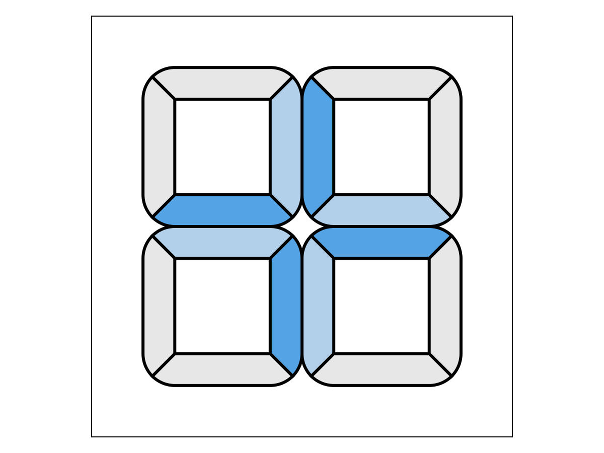
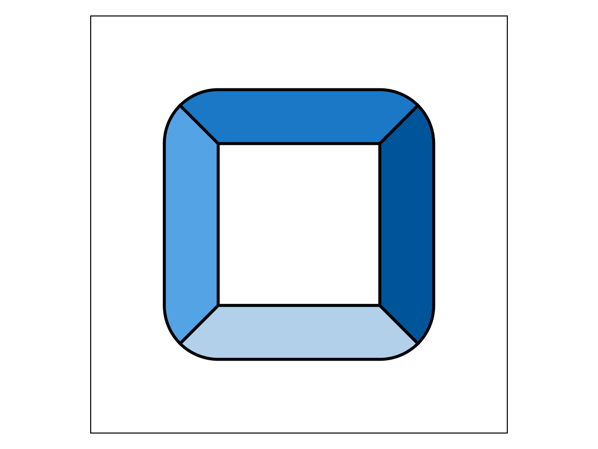
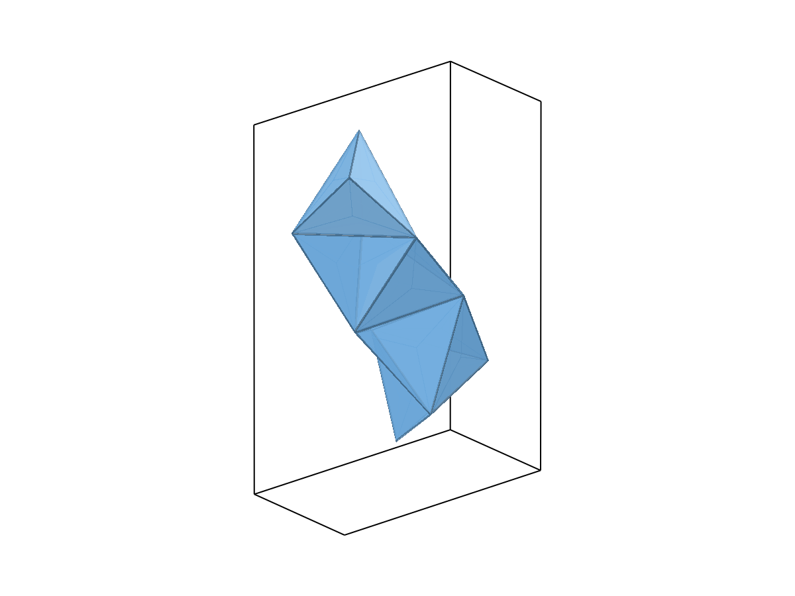

Bounded and unbounded rules
Some rule sets run out of structures; others grow forever. isunbounded settles which, and when the answer is yes, growthwitness hands back the motion that repeats and tilings the repeat unit, if there is one.
The figures below use CairoMakie because the documentation builds headless. For 3D of your own, prefer GLMakie or WGLMakie, which depth-test instead of sorting.
A bounded system runs out
Squares whose site 1 binds site 2 can only turn the same way at every bond, so a chain of them folds back on itself.
ring = BindingRules([1 1 1 2], UnitSquare)
isunbounded(ring)falsefalse here is a proof rather than a search giving up: the motion between two repeats of a chain state is a quarter turn, and every copy of a pure rotation stays the same distance from its axis, so infinitely many of them cannot fit. The whole system is therefore finite and countpolyforms counts it exactly.
countpolyforms(ring)PolyformCount[n=4, exact, largest=4]Four structures, and the largest closes into a ring with no open site left.
polys = polygen(ring)
biggest = polys[argmax(nparticles.(polys))]
nparticles(biggest), nbonds(biggest), length(opensitelocs(biggest))(4, 4, 0)render(biggest)
An unbounded system, and its repeat unit
Binding opposite sides of a square instead gives the square lattice.
square = BindingRules([1 2 1 4; 1 3 1 1], UnitSquare)
isunbounded(square)truegrowthwitness says why: a single particle repeats under a pure translation. The angle comes back as 2π rather than 0 because the motion accumulates its turn, which is why the test wraps before asking whether it turns at all.
w = growthwitness(square)
(period = w.period, translation = w.generator.x, angle = rotation_angle(w.generator.psi))(period = 1, translation = [0.0, -1.0000000000000002], angle = 6.283185307179586)Here the repeat is also a tiling: one particle whose open sites all close onto translated copies of itself. tilings finds the closures, and each one carries the lattice vectors, which of the rules' bonds it spends, and whether it leaves any site open.
cell = first(polygen(square; maxsize=1))
complete = filter(t -> iscomplete(t), tilings(cell))
first(complete)Tiling{2}[n=1, d=2]tilelatticevectors(cell)2-element Vector{SVector{2, Float64}}:
[-1.2246467991473535e-16, 1.0000000000000002]
[1.0000000000000002, 1.8369701987210302e-16]Two vectors, so the cell tiles the plane. tilings also returns the partial closures — one vector only, which is an infinite strip rather than a tiling — so filter on complete when you want the real thing.
length(tilings(cell)), length(complete)(3, 1)The cell itself is the repeat unit:
render(cell; bindingrules=square)
A cell that needs several copies is found by raising maxorder; with the default of 1 a system whose neighbour is rotated rather than translated reports no tiling at all.
turn = BindingRules([1 1 1 2; 1 3 1 4], UnitSquare)
mono = first(polygen(turn; maxsize=1))
length(tilings(mono; maxorder=1)), length(tilings(mono; maxorder=2))(0, 1)Counting what cannot be enumerated
An unbounded system has infinitely many structures, so countpolyforms needs a maxsize. Up to that size it enumerates exactly while the count is small, and switches to sampling the reverse-search tree beyond exact_budget.
countpolyforms(square; maxsize=9)PolyformCount[n≈13600.0 ± 22.0, largest≥9, truncated]The ≈ and the error bar mark an estimate rather than a count. Raising maxsize costs time but not memory: maxsize=14 gives about 1.0e7 structures, and the estimate stays within a couple of percent across trials.
Unbounded without ever repeating
In the plane, growing forever and closing periodically are the same thing. In space they are not, and regular tetrahedra are the standard example: glued face to face they form the Boerdijk–Coxeter helix, whose twist per tetrahedron is an irrational fraction of a turn.
tetrahedra = PolyhedronParticleSpecies(Tetrahedron(); colors=fill(1, 4))
helixrules = BindingRules([1 1 1 1], tetrahedra)
w = growthwitness(helixrules)
axis = rotation_axis(w.generator.psi)
(angle = rotation_angle(w.generator.psi), acos_minus_two_thirds = acos(-2/3), pitch = dot(w.generator.x, axis))(angle = 2.300523983021863, acos_minus_two_thirds = 2.300523983021863, pitch = -0.31622776601683816)The motion is a screw: it turns by acos(-2/3) and climbs by 0.316 along its axis every tetrahedron. Copies far enough apart along that axis can never touch, which is what makes the growth infinite — and no multiple of that angle is ever a full turn, so the chain never closes. canchain, which looks for a periodic closure, therefore finds nothing here, while isunbounded still says yes.
canchain(helixrules), isunbounded(helixrules)(nothing, true)This is the one place the two disagree, and the reason to reach for isunbounded.
The helix is visible in the structures themselves. Among the chains of eight tetrahedra, the longest reaches well short of eight straight steps, because it is curling.
function ischain(p)
degree = zeros(Int, nparticles(p))
for (a, b) in bonds(p)
degree[a.particle] += 1
degree[b.particle] += 1
end
return all(<=(2), degree)
end
chains = filter(ischain, polygen(helixrules; maxsize=8))
helix = chains[argmax(nparticles.(chains))]
xs = [p.pose.x for p in helix.particles]
(endtoend = norm(xs[end] - xs[1]), straight = (nparticles(helix) - 1) * norm(w.generator.x))(endtoend = 2.2308986995767235, straight = 2.857738033247041)render(helix)